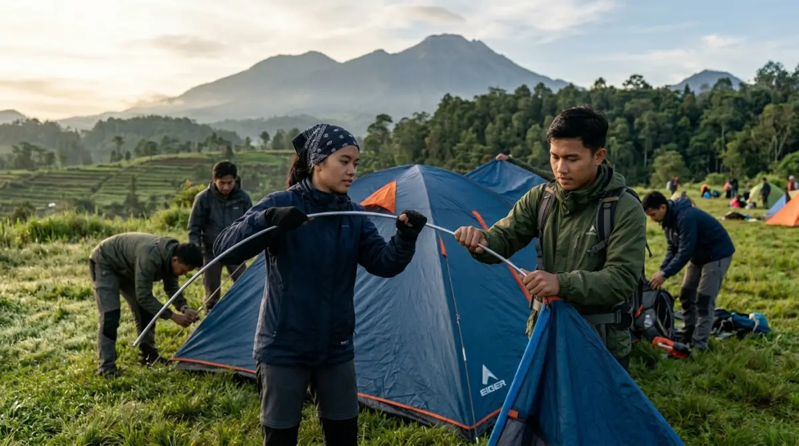
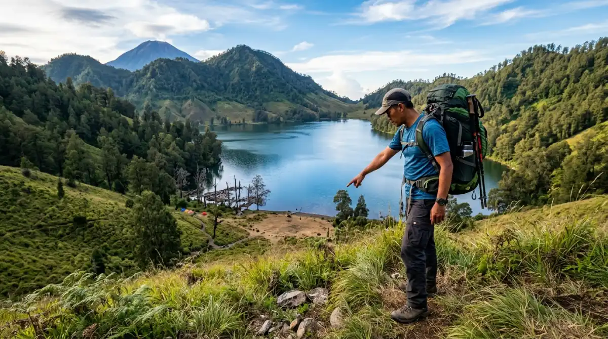

Memasang flysheet dengan kencang sangat penting untuk menahan air hujan.Cara mendirikan tenda kemah yang benar dimulai dari memilih lokasi yang tepat, memasang groundsheet, merakit tiang, memasang flysheet, dan mengamankan pasak serta tali guy rope secara merata.
Mengapa Penting Tahu Cara Mendirikan Tenda Kemah yang Benar?
Kemampuan mendirikan tenda dengan benar adalah keterampilan dasar yang wajib dikuasai setiap pendaki dan pecinta camping. Tenda yang berdiri dengan salah dapat ambruk saat hujan, rembes, atau memberikan ruang tidur yang tidak nyaman. Menurut data dari komunitas hiking Indonesia, sekitar 60% insiden tenda ambruk terjadi karena kesalahan pemasangan pasak dan tiang, bukan karena kerusakan material.
Persiapan Sebelum Mendirikan Tenda Kemah
Persiapan yang tepat sebelum mendirikan tenda menghemat waktu dan mencegah masalah di lapangan.
Pertama, periksa kelengkapan komponen: tiang (poles), flysheet, inner tent, groundsheet, pasak (stakes), dan tali guy rope. Komponen yang hilang jauh lebih sulit diatasi di alam terbuka. Kedua, baca panduan pemasangan yang disertakan dalam paket tenda, karena tiap model memiliki urutan pemasangan yang berbeda. Ketiga, siapkan senter atau headlamp jika mendirikan tenda menjelang malam.
Langkah-Langkah Cara Mendirikan Tenda Kemah
Berikut adalah urutan langkah mendirikan tenda kemah yang berlaku untuk kebanyakan jenis tenda, terutama tenda dome yang paling umum digunakan.
Langkah 1: Pilih dan Bersihkan Lokasi
Lokasi yang ideal untuk mendirikan tenda adalah tanah yang relatif datar, bebas dari batu dan ranting tajam, serta memiliki drainase alami yang baik agar air tidak menggenang di bawah tenda. Hindari mendirikan tenda di jalur air, di bawah pohon besar dengan dahan rapuh, atau di area terbuka yang sangat terpapar angin.
Bersihkan permukaan tanah dari batu, ranting, dan kotoran. Tanah yang bersih mencegah kerusakan groundsheet dan memberikan permukaan tidur yang lebih nyaman.
Langkah 2: Pasang Groundsheet
Bentangkan groundsheet sesuai ukuran tenda. Groundsheet berfungsi sebagai lapisan pelindung antara tanah dan bagian bawah tenda, menjaga kelembapan dari bawah tidak meresap ke dalam. Pastikan groundsheet tidak lebih lebar dari footprint tenda agar air hujan tidak terkumpul di bawahnya.
Langkah 3: Rakit Tiang Tenda
Sambungkan segmen-segmen tiang sesuai urutan warna atau panduan pemasangan. Untuk tenda dome, terdapat dua tiang utama yang harus disilangkan. Rakit tiang di luar tenda terlebih dahulu sebelum memasangnya agar lebih mudah dikelola.
Langkah 4: Pasang Tiang ke Tenda
Masukkan ujung tiang ke grommet (lubang pengait) di sudut tenda, kemudian lengkungkan tiang secara perlahan hingga masuk ke pengait (clips) atau selongsong tiang (pole sleeves) di sepanjang atap tenda. Proses ini membutuhkan dua orang untuk tenda berukuran besar agar lebih mudah.
Langkah 5: Amankan Pasak di Sudut Tenda
Tancapkan pasak pada setiap sudut tenda dengan sudut kemiringan 45 derajat menjauhi tenda untuk daya cengkram maksimal. Pasak yang ditancapkan tegak lurus lebih mudah tercabut. Gunakan batu atau palu pasak untuk menekan pasak hingga kepala pasak sejajar dengan tanah.
Langkah 6: Pasang Flysheet
Bentangkan flysheet di atas struktur tiang. Kaitkan flysheet pada kait yang tersedia di tiang atau sudut tenda. Pastikan flysheet terentang dengan merata tanpa kerutan yang dapat menahan genangan air. Flysheet yang terpasang baik tidak menyentuh dinding inner tent agar sirkulasi udara tetap lancar.
Langkah 7: Kencangkan Tali Guy Rope
Pasang dan kencangkan tali guy rope pada titik-titik yang tersedia di flysheet, lalu tancapkan pasak di ujung tali. Guy rope memberikan stabilitas tambahan terhadap angin. Kencangkan tali hingga flysheet tegang namun tidak menarik struktur tenda secara berlebihan.

Pemilihan lokasi yang datar dan aman sangat menentukan kenyamanan saat camping.Kesalahan Umum Saat Mendirikan Tenda Kemah
Beberapa kesalahan sering dilakukan pemula yang berdampak langsung pada kenyamanan dan keamanan tenda.
Pintu tenda menghadap angin adalah kesalahan yang paling sering menyebabkan flysheet terangkat. Selalu posisikan pintu tenda membelakangi arah angin utama. Pasak yang tidak cukup dalam juga menjadi masalah umum, terutama di tanah berpasir atau tanah lunak yang memerlukan pasak lebih panjang atau teknik pemasangan berbeda seperti pemasangan menyilang (deadman anchoring).
Flysheet yang dipasang terlalu longgar tidak memberikan perlindungan optimal dari hujan dan angin. Pastikan semua titik pengait terpasang dengan benar sebelum mengencangkan tali.
Tips Mendirikan Tenda saat Hujan
Kondisi hujan memerlukan teknik khusus agar proses pemasangan tetap efisien dan tenda tetap kering.
Bawa kantong plastik besar untuk meletakkan komponen tenda sementara saat merakit di bawah hujan. Pasang flysheet terlebih dahulu sebagai atap darurat sebelum merakit inner tent jika model tenda memungkinkan. Segera lap bagian dalam inner tent dengan kain kering sebelum memasang alas tidur. Periksa ventilasi tenda agar sirkulasi udara tetap baik meski cuaca basah, untuk mencegah kondensasi berlebih di dalam tenda.
Mendirikan tenda kemah dengan benar membutuhkan kombinasi persiapan, pemilihan lokasi yang tepat, dan urutan pemasangan yang sistematis. Keterampilan ini tidak sulit dipelajari dan sangat meningkat dengan latihan. Sebelum berangkat camping, luangkan waktu 30 menit untuk berlatih mendirikan tenda di halaman rumah agar proses di lapangan berjalan lancar dan menyenangkan.
FAQ — Pertanyaan Seputar Mendirikan Tenda
1. Berapa lama waktu yang dibutuhkan untuk mendirikan tenda kemah?
Pemula umumnya membutuhkan 15-30 menit untuk tenda dome 2-3 orang. Dengan latihan dan pengalaman, waktu
ini dapat dipangkas hingga 5-10 menit. Latihan di rumah sebelum perjalanan sangat disarankan.
2. Apakah bisa mendirikan tenda sendirian?
Kebanyakan tenda dome berukuran 1-2 orang dirancang untuk dipasang oleh satu orang. Tenda berukuran 3
orang ke atas lebih mudah dan aman didirikan berdua.
3. Apa yang harus dilakukan jika pasak tidak bisa masuk ke tanah berbatu?
Gunakan batu besar untuk menjepit tali guy rope sebagai pengganti pasak, atau cari retakan di bebatuan
untuk menyisipkan pasak. Teknik natural anchor menggunakan batu atau pohon kecil juga dapat digunakan.